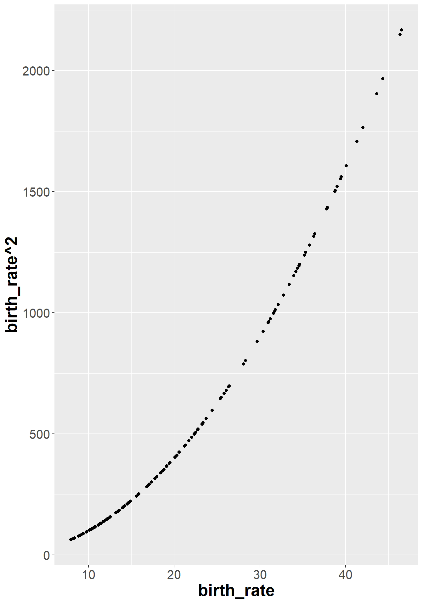
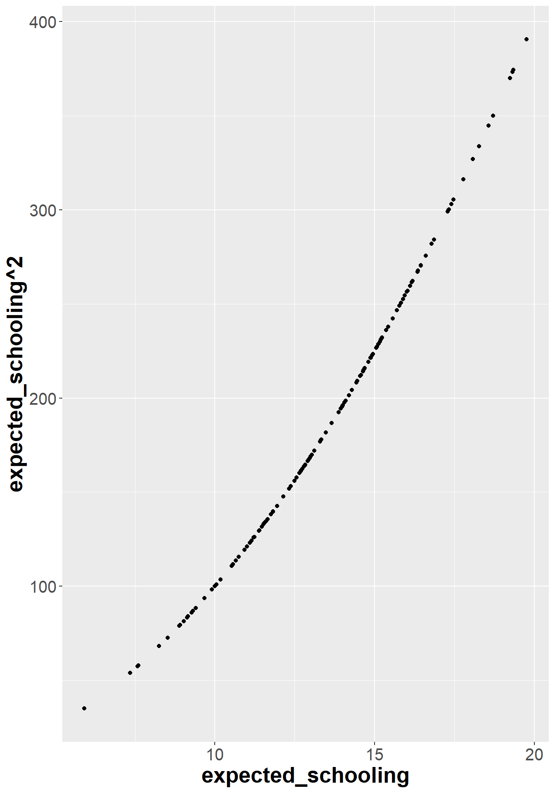
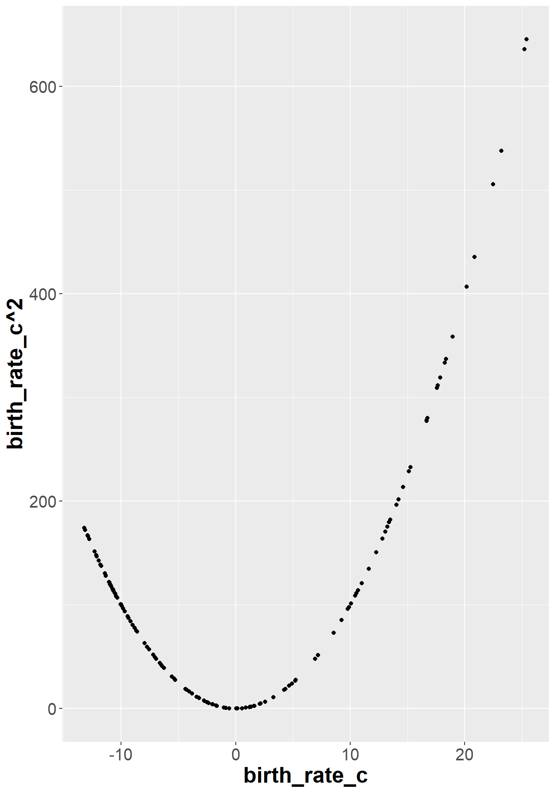
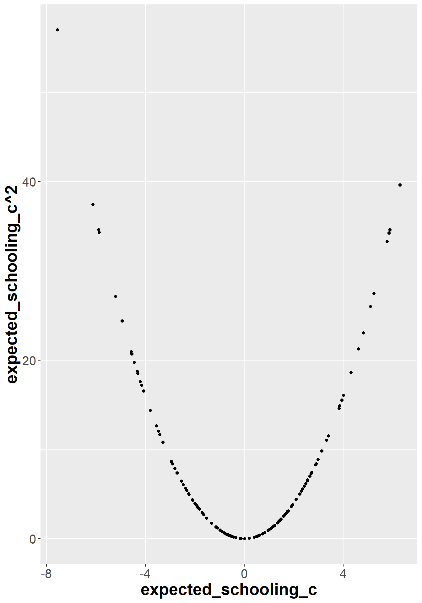
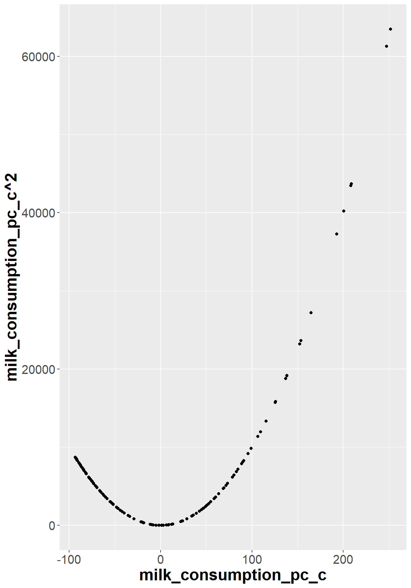

Os dados disponíveis no arquivo data/owid.csv foram obtidos do portal Our World in Data, cuja missão é publicar pesquisas e dados relacionados a grandes problemas mundiais como pobreza, doenças, fome, mudanças climáticas, guerras, riscos existenciais e desigualdade.
Os dados originais foram pré-processados no sentido de remover observações faltantes. Há um total de 985 observações coletadas para 21 variáveis:
Variáveis
continent: continente em que está o país
entity: nome do país
code: código do país
year: ano
birth_rate: número de nascimentos com vida por 1.000 habitantes na população.
child_mortality: mortes de crianças menores de 5 anos de idade (% nascimentos)
co2_emission_pc: emissões anuais de CO2 per capita (t/pessoa)
deaths_solid_fuels_pollution: mortes resultantes de poluição por queima de combustíveis sólidos em ambientes internos (%)
deaths_particulate_pollution: mortes resultantes de poluição por material particulado em ambientes externos (%)
deaths_air_pollution: mortes resultantes de poluição do ar ambiente (%)
deaths_ozone: mortes resultantes de poluição por ozônio em ambientes externos (%)
deaths_sanitation: mortes resultantes de falta ou precariedade de acesso a saneamento básico (%)
electricity_demand: geração total de eletricidade anual, ajustada por importação e exportação de eletricidade (TWh)
energy_use_pc: consumo de energia médio anual (eletricidade, transporte, aquecimento, preparo de alimentos) per capita (KWh/pessoa)
expected_schooling: expectativa do número de anos de educação que uma criança que entra no sistema escolar deve receber
happiness_cantril_ladder: nível de felicidade médio populacional (0-10)
gdp_pc: produto interno bruto per capita ($ internacional, referência 2017)
life_expectancy: expectativa de vida no nascimento (anos)
milk_consumption_pc: consumo de leite médio anual per capita (kg)
no_water: população sem acesso a fontes seguras de água (encanada, poços, fontes, chuva e envasada) (%)
urban_population_percent: população habitante de áreas urbanas (% população total)
Análise Exploratória de Dados
Análise Preliminar e Preparação da Massa de Dados
Nesta seção, é conduzida a análise exploratória da massa de dados owid, a fim de compreender suas características principais. De modo geral, a ideia inicial é procurar por possíveis correlações entre a felicidade média da população e as demais variáveis.
Inicialmente, vamos limpar a área de trabalho e iniciar a leitura dos dados.
# limpa área de trabalhorm(list =ls())# carrega pacote `tidyverse`library(tidyverse)# carrega dadosowid <-read_delim("data/owid.csv", delim =",", col_names =TRUE)# codifica variável `continent` como fatorowid$continent <-as.factor(owid$continent)str(owid)
Observamos, portanto, um total de 985 dados, sendo três colunas apresentadas como strings (continent, entity e country_code) e as demais como numéricas. Não obstante, os nomes das variáveis são intuitivos e não necessitam de alterações.
PARTE 3: Construção de Modelos
Utilize o procedimento para construir modelos de regressão para a resposta expectativa de vida (life_expectancy), considerando um dos conjuntos de variáveis explicativas:
Conjunto I:continent, birth_rate, expected_schooling e milk_consumption_pc (e/ou transformações) Conjunto II:continentm gdp_pc, no_water e urban_population_percent (e/ou transformações)
Considere apenas o ano de 2015 e exclua o continente ‘Oceania’.
Lembre-se que os passos apropriados em análise de regressão consistem em:
construção do modelo
formulação e ajuste do modelo
Devemos utilizar o seguinte procedimento:
inclusão de termos contendo as variáveis quantitativas (polinomiais, transformações, interações, etc.);
inclusão de variáveis qualitativas e suas interações;
inclusão de interações entre termos contendo variáveis quantitativas e qualitativas;
avaliação do modelo
realizar análise de resíduos (verificar validade das hipóteses)
utilização do modelo
para realizar inferências
para auxiliar o processo de tomada de decisão
Forneça interpretações e discussão para os resultados obtidos.
Escolhe-se o modelo de regressão I com as variáveis continent, birth_rate, expected_schooling e milk_consumption_pc.
Separando os dados de interesse para o modelo
# Filtrando os dados para o ano de 2015model1_data <- owid %>%filter(year ==2015)# Selecionando somente as variáveis de interessemodel1_data <- model1_data[,c(1,5,15,18,19)]# Retirando os dados referentes a oceaniamodel1_data <-subset(model1_data, model1_data$continent !="Oceania")# Juntando os dados referentes às Américas do Norte e Sulmodel1_data <- model1_data %>%mutate(continent = dplyr::recode(continent, "North America"="America", "South America"="America"))
Criando o modelo de regressão
# Gráfico de dispersão dos dadosplot(model1_data)
Verificando correlação entre as variáveis explicativas
É possível perceber que existe correlação entre as variáveis explicativas. A correlação mais forte é entre as variáveis “birth_rate” e “expected_schooling”.
Verificando correlação entre termos quadráticos e lineares das variáveis explicativas
Para a variável birth_rate
# Correlação para birth ratecor(model1_data$birth_rate, model1_data$birth_rate^2)
[1] 0.9814778
Para a variável expected_schooling
# Correlação para expected schoolingcor(model1_data$expected_schooling, model1_data$expected_schooling^2)
[1] 0.9908
Para a variável milk_consumption_pc
# Correlação para milk_consumption_pccor(model1_data$milk_consumption_pc, model1_data$milk_consumption_pc^2)
[1] 0.9401298
Conclui-se que para todas as três variáveis quantitativas do modelo a correlação entre seus valores lineares e seus valores quadráticos é muito elevada. Para diminuir esse efeito no modelo, centraliza-se as variáveis explicativas antes da construção do modelo.
Gráficos de dispersão das variaveis explicativas com seus quadrados
ggplot(model1_data , aes(x = birth_rate, y = birth_rate^2)) +geom_point()

ggplot(model1_data, aes(x = expected_schooling, y = expected_schooling^2)) +geom_point()

ggplot(model1_data, aes(x = milk_consumption_pc, y = milk_consumption_pc^2)) +geom_point()
É possível perceber que apesar do aspecto quadrático dos pontos, a variação é monotônica e possui caráter aproximadamente linear. Assim, as variáveis explicativas foram centralizadas.
# Correlação para birth ratecor(model1_data$birth_rate_c, model1_data$birth_rate_c^2)
[1] 0.5754585
Para a variável expected_schooling_c
# Correlação para expected schoolingcor(model1_data$expected_schooling_c, model1_data$expected_schooling_c^2)
[1] -0.1253899
Para a variável milk_consumption_pc_c
# Correlação para milk_consumption_pccor(model1_data$milk_consumption_pc_c, model1_data$milk_consumption_pc_c^2)
[1] 0.6208407
É possível observar que as correlações entre os termos lineares e quadráticos diminuíram para todas as variáveis explicativas quantitativas do modelo após centralizadas pela média dos valores.
Assim, os gráficos de dispersão das variáveis explicativas centralizadas com seus respectivos quadrados são dados por:
ggplot(model1_data , aes(x = birth_rate_c, y = birth_rate_c^2)) +geom_point()

ggplot(model1_data, aes(x = expected_schooling_c, y = expected_schooling_c^2)) +geom_point()

ggplot(model1_data, aes(x = milk_consumption_pc_c, y = milk_consumption_pc_c^2)) +geom_point()

É possível pereber que ao centralizar as variáveis explicativas, o perfil parabólico do gráfico de dispersão se torna mais acentuado, mostrando de forma qualitativa que a correlação linear entre as variáveis diminuiu. Verificando novamente os coeficientes de correlação obtém-se:
As correlações entre as variáveis explicativas permanecem inalteradas, mostrando que a centralização das variáveis não diminui suas correlações entre si.
Criando o modelo de regressão
# Modelo de regressão linear com as variáveis explicativas "birth_rate_c", "expected_schooling_c" e "milk_consumption_pc_c"# Modelo polinomial de segunda ordem completo com as variáveis quantitativasmodel1_quant <-lm(life_expectancy ~I(birth_rate_c^2) +I(expected_schooling_c^2) +I(milk_consumption_pc_c^2) + birth_rate_c*expected_schooling_c + birth_rate_c*milk_consumption_pc_c + expected_schooling_c*milk_consumption_pc_c, data = model1_data )summary(model1_quant)